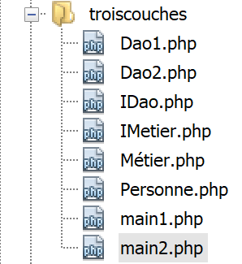
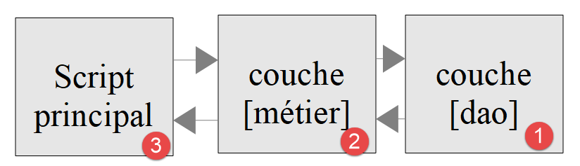

10. Aplicações em camadas
10.1. Introduction

Vamos agora descobrir como estruturar uma aplicação PHP em camadas:

Neste esquema, é a camada da esquerda que toma a iniciativa de utilizar a camada da direita. O papel das camadas é o seguinte:
- [1]: a camada denominada [dao] (Data Access Objects) encarrega-se das trocas com armazéns de dados externos [4] (ficheiros, bases de dados, serviços web…). Esta camada é por vezes designada por [DAL] (Data Access Layer), um termo que descreve melhor a função da camada. Esta camada pode ler dados [3] ou gravar dados [2]. É solicitada pela camada [métier] [6] e devolve-lhe resultados [7];
- [5]: uma camada denominada [métier] que reúne procedimentos «de negócio» aos quais são fornecidos todos os dados de que necessitam. É geralmente a camada mais estável de um projeto, uma vez que não depende da forma como os dados são obtidos. Estes têm duas fontes:
- [9]: os dados fornecidos pelo script PHP;
- [6,7]: os dados solicitados à camada [dao].
- [8]: o script principal é o «maestro». Numa aplicação de consola, este irá:
- criar as camadas [métier] e [dao];
- executar o algoritmo da aplicação. Este algoritmo funciona como o de um maestro: não contém qualquer código «de negócio» nem de acesso aos dados. O script principal limita-se a chamar os procedimentos das camadas [métier] e [9]. Ignora totalmente a camada [dao] e os dados externos. Pode fornecer à camada [métier] dados da camada [9]. Numa aplicação de consola, estes podem provir de ficheiros de configuração ou do utilizador do script. Recebe resultados [10] da camada [métier]. Pode ser necessário armazenar alguns resultados: para tal, recorre novamente aos procedimentos da camada [métier], que, por sua vez, se dirigem à camada [dao], responsável pela tarefa;
- entre os resultados, o script principal pode receber exceções. É sua função gerir as exceções que são reportadas por todas as camadas;
Esta divisão em camadas destina-se a facilitar a evolução da aplicação. Para tal, cada camada implementa uma interface. Suponhamos que:
- a camada [dao] seja implementada por uma classe [Dao], que implementa uma interface [IDao];
- a camada [métier] é implementada por uma classe [Métier], que implementa uma interface [IMétier];
Os procedimentos da camada [métier] passarão então a utilizar a interface [IDao] em vez da classe [Dao]. Isto permite atualizar a camada [Dao] sem alterar a camada [Métier]. Suponhamos que, na versão 1, a camada [Dao1] utilize dados de uma base de dados. Na sequência de uma atualização, esses dados são agora fornecidos por um serviço web na versão 2, [Dao2]. Deve-se garantir que as duas classes [Dao1] e [Dao2] implementem a mesma interface [IDao] e que lancem as mesmas exceções. Se isto for verificado, a camada [Métier], que trabalha com a interface [IDao], permanecerá inalterada;
O mesmo raciocínio aplica-se à camada [Métier].
Vejamos uma implementação com classes e interfaces:

A aplicação irá implementar a seguinte estrutura em camadas:

10.2. Objetos trocados entre camadas
Normalmente, as camadas trocam vários objetos. Neste caso, irão trocar a seguinte classe [Personne.php]:
<?php
// uma pessoa
class Personne {
// identificador
private $id;
// construtor
public function __construct(int $id) {
$this->id = $id;
}
// toString
public function __toString(): string {
return "[Personne($this->id)]";
}
}
Comentários
- linha 6: a pessoa tem apenas um atributo, o seu identificador [$id]. Vamos supor que este identifica uma pessoa única num armazém de dados;
- linhas 9-11: o construtor que permite criar um tipo [Personne] com o seu identificador;
- linhas 14-16: o método [__toString] que apresenta o identificador da pessoa;
10.3. Camada [dao]
A interface [IDao] implementada pela camada [dao, 1] é a seguinte: [IDao.php]:
<?php
// camada [dao] ------------------------
interface IDao {
// recuperação de uma pessoa num armazém externo
// introduz-se o identificador da pessoa
public function get(int $id): Personne;
// armazenamento de uma pessoa num armazém externo
public function save(Personne $p): void;
}
Esta interface é implementada pela seguinte classe [Dao1] [Dao1.php]:
<?php
class Dao1 implements IDao {
// armazenamento de uma pessoa num armazém externo
public function save(Personne $p): void {
print "[Dao1] : Sauvegarde de la personne $p en base de données [locale]\n";
}
// recuperação de uma pessoa num armazém externo
public function get(int $id): Personne {
print "[Dao1] : Récupération de la personne d'identité ($id) en base de données [locale]\n";
return new Personne($id);
}
}
Comentários
- a classe não interage com um armazém de dados. Limita-se a apresentar mensagens para acompanhar a execução do código (linhas 7 e 12);
- linha 13: devolve-se efetivamente uma pessoa com o identificador passado como parâmetro ao método (linha 11);
Implementamos também a interface [IDao] com a seguinte classe [Dao2] [Dao2.php]:
<?php
class Dao2 implements IDao {
// armazenamento de uma pessoa num armazém externo
public function save(Personne $p): void {
print "[Dao2] : Sauvegarde de la personne $p en base de données [distante]\n";
}
// recuperação de uma pessoa num armazém externo
public function get(int $id): Personne {
print "[Dao2] : Récupération de la personne d'identité ($id) en base de données [distante]\n";
return new Personne($id);
}
}
A classe [Dao2] é semelhante à classe [Dao1], com a única diferença de que alterámos as mensagens apresentadas.
10.4. Camada [métier]
A camada [métier, 2] disponibiliza a seguinte interface [IMétier] [IMetier.php]:
<?php
// camada [métier] ------------------------
interface IMétier extends IDao {
// processamento de uma pessoa identificada pelo seu ID
public function doSomething(Personne $p): void;
}
Comentários
- A interface [IMétier] estende a interface [IDao]. Isto não é de todo obrigatório. Fazemo-lo aqui porque o exemplo é simples;
- linha 7: o método [doSomething] é específico da camada [Métier];
A interface [IMétier] será implementada pela seguinte classe [Métier]: [Métier.php]:
<?php
class Métier implements IMétier {
// camada [dao]
private $dao;
// getter / setter
public function setDao(IDao $dao): void {
$this->dao = $dao;
}
public function getDao(): IDao {
return $this->dao;
}
// explora-se uma pessoa
public function doSomething(Personne $p): void {
// processamento
print "Métier : Traitement métier de la personne $p\n";
}
// guardar os dados da pessoa
public function save(Personne $p): void {
print "[Métier] : Sauvegarde de la personne $p\n";
// solicita-se à camada [dao] que efetue o armazenamento
$this->dao->save($p);
}
public function get(int $id): Personne {
print "[Métier] : récupération de la personne d'identifiant $id\n";
// solicita-se a pessoa à camada [dao]
$personne = $this->dao->get($id);
return $personne;
}
}
Comentários
- linha 5: a camada [métier] deve ter uma referência à camada [dao] para poder utilizar os métodos desta última;
- linhas 8-10: o método [setDao] permite atribuir à camada [métier] a referência da camada [dao]. Note-se que o tipo do parâmetro é [IDao]. Assim, a camada [métier] poderá funcionar com qualquer classe que implemente a interface [IDao]. Se passarmos de uma camada [Dao1] para uma camada [Dao2] e ambas implementarem a interface [IDao], a camada [métier] não precisa de ser reescrita;
- linhas 17-20: implementação de [IMetier::doSomething];
- linhas 23-27: implementação de [IMetier::save]. Este método deve guardar um registo de pessoa num armazém de dados. A camada [métier] não sabe fazer isso. Recorre à camada [dao] para efetuar este registo;
- linhas 29-34: implementação de [IMetier::get]. Este método deve recuperar, de um armazém de dados, a pessoa cujo identificador lhe é passado como parâmetro. A camada [métier] não sabe fazer isso. Recorre à camada [dao] para realizar a tarefa (linha 32);
Conclusão
Sempre que a camada [métier] precisar de aceder aos dados armazenados no armazém de dados, deve passar pela camada [dao], que foi criada para aceder a esses dados.
10.5. Script principal
Vamos escrever dois scripts, que atuam como «maestros» desta aplicação. O primeiro, [main1.php], utilizará a camada [Dao1], enquanto o segundo, [main2.php], utilizará a camada [Dao2]. Queremos demonstrar que isto não tem qualquer impacto no código da camada [Métier].
O script [main1.php] é o seguinte:
<?php
// respeito rigoroso dos parâmetros das funções
declare (strict_types=1);
// inclusão de classes e interfaces
require_once __DIR__."/Personne.php";
require_once __DIR__."/IDao.php";
require_once __DIR__."/IMetier.php";
require_once __DIR__."/Dao1.php";
require_once __DIR__."/Métier.php";
// teste ----------------
// criação das camadas
$dao1 = new Dao1();
$métier = new Métier();
$métier->setDao($dao1);
// utilização da camada [métier]
$personne = $métier->get(4);
$métier->doSomething($personne);
$métier->save($personne);
Comentários
- Recorde-se alguns pontos: o script [main1.php] é o «maestro» da aplicação. Cria a estrutura em camadas da aplicação (linhas 15-17) e, em seguida, começa a interagir com a camada [métier] (linhas 19-21). A estrutura em camadas é, de facto, a seguinte:
De acordo com este esquema, o script [main1.php] só deve interagir com a camada [métier]. Não deve interagir com a camada [dao], mesmo que isso seja teoricamente possível.
Os resultados da execução são os seguintes:
[Métier] : récupération de la personne d'identifiant 4
[Dao1] : Récupération de la personne d'identité (4) en base de données [locale]
[Métier] : Traitement métier de la personne [Personne(4)]
[Métier] : Sauvegarde de la personne [Personne(4)]
[Dao1] : Sauvegarde de la personne [Personne(4)] en base de données [locale]
Comentários
- a linha 10 do código provocou a gravação das linhas 1 e 2 dos resultados;
- a linha 20 do código provocou a gravação da linha 3 dos resultados;
- a linha 21 do código provocou a gravação das linhas 4 e 5 dos resultados;
O script [main2.php] é o seguinte:
<?php
// respeito rigoroso pelos parâmetros das funções
declare (strict_types=1);
// inclusão de classes e interfaces
require_once __DIR__."/Personne.php";
require_once __DIR__."/IDao.php";
require_once __DIR__."/IMetier.php";
require_once __DIR__."/Dao2.php";
require_once __DIR__."/Métier.php";
// teste ----------------
// criação das camadas
$dao2 = new Dao2();
$métier = new Métier();
$métier->setDao($dao2);
// utilização da camada [métier]
$personne = $métier->get(4);
$métier->doSomething($personne);
$métier->save($personne);
Comentários
- linhas 36-38: a estrutura em camadas utiliza agora a camada [Dao2];
Os resultados da execução são os seguintes:
[Métier] : récupération de la personne d'identifiant 4
[Dao2] : Récupération de la personne d'identité (4) en base de données [distante]
[Métier] : Traitement métier de la personne [Personne(4)]
[Métier] : Sauvegarde de la personne [Personne(4)]
[Dao2] : Sauvegarde de la personne [Personne(4)] en base de données [distante]
A camada [Dao1] simula um acesso a uma base de dados local, enquanto a camada [Dao2] simula um acesso a uma base de dados remota. Desde que estas duas camadas respeitem a interface [IDao], verifica-se que o código da camada [Métier] não precisou de ser alterado.
Vamos aplicar o que acabámos de aprender ao exercício de cálculo de impostos que nos serve de fio condutor.